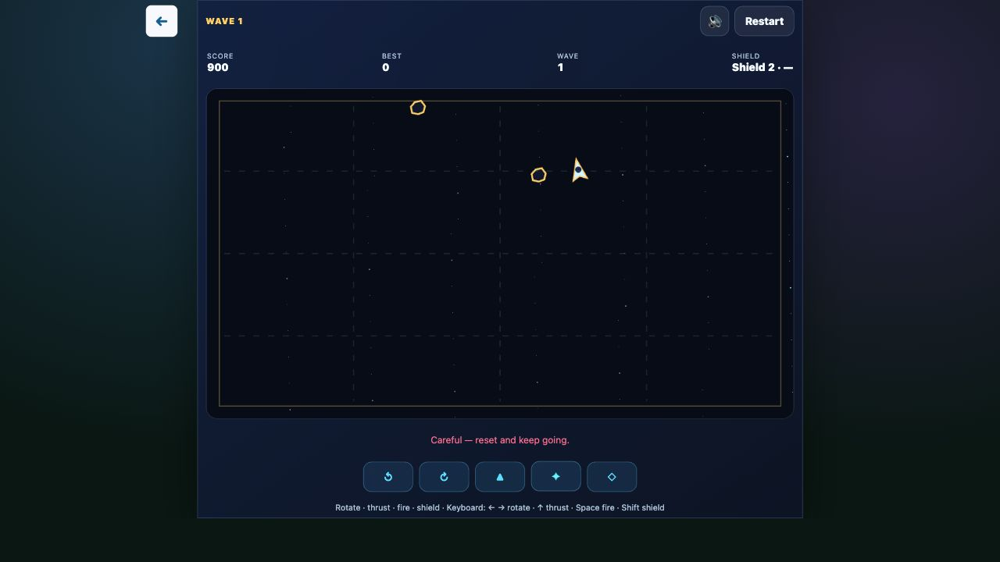

The first instruction in Space Rocks is not “destroy the rocks.” It is: “Tap thrust once, then watch the drift.” I tapped, released, and watched Rux keep moving. That was the lesson. The ship does not stop just because my finger does.

That is a small design problem, but it comes up in many browser games. How do you teach a physical rule when a paragraph can describe it but cannot make the player understand it?
Teach the rule before the pressure
In a normal shooter, a movement button often feels like a location command: press left, move left. Space Rocks asks for a different mental model. Thrust adds velocity, and the ship keeps drifting through the wraparound field. Turning changes the next arc; it does not erase the motion already in progress.
We tried to make that rule visible without stopping play. The opening gives the player a short safety window, a localized drift sentence, and a simple arrow in the Canvas showing the current velocity direction. The cue expires after a few seconds. It is there long enough to notice, but not long enough to become a permanent label.
That choice matters. A modal tutorial would be clearer in the narrow sense, but it would teach inertia while the player is not actually moving. The non-blocking cue lets the player learn from the same input that starts the run.
A successful hit is better than a correct explanation
In my local hands-on session on the English Space Rocks route, I tapped thrust, rotated in short steps, and fired in bursts. I cleared several large-to-small rock fragments and saw Rapid Fire appear. The run reached a score of 900 in Wave 1.
The important part was not the number. It was the sequence: fire, drift past the original line, turn, and make the next shot from a new position. Once the ship is moving, aiming and movement stop being separate jobs. Every shot also chooses where the ship will be a moment later.
The recovery is part of the teaching
I also made the mistake the opening is designed to reveal. A careless pass brought a rock into the ship's path. The ship reset, the Shield count dropped from five to three and later two, and the game showed “Careful — reset and keep going.” The round stayed alive.
That recovery is more useful than a clean explanation of collision rules. It shows the cost of ignoring momentum, then gives the player another attempt with the same rule still in view. The game does not remove the consequence; it keeps the consequence from ending the lesson too early.
Three practical rules for teaching physics
Space Rocks left us with a compact pattern that applies beyond space shooters:
- Give the first input a low-cost runway. A player needs a moment to connect an action with its result before the field becomes crowded.
- Draw the invisible rule. The velocity arrow says “this is where the ship is going” more quickly than a definition of inertia.
- Let recovery preserve the lesson. A collision should change the next decision, not erase the player's chance to understand why it happened.
There is a limit, of course. A cue cannot fix a control scheme that feels vague, and a forgiving opening cannot carry a player through every later wave. The player still has to rotate, fire, split the rocks, collect Rapid Fire, and save Shield for the guardian core.
If you want to feel the difference, try Space Rocks and start with one thrust. Do not immediately hold it down. Watch where Rux goes after the input ends. That next position is the real control.
This article was outlined with AI assistance and then checked and edited against the actual WeightPlay project and a hands-on play session by the WeightStudio team.